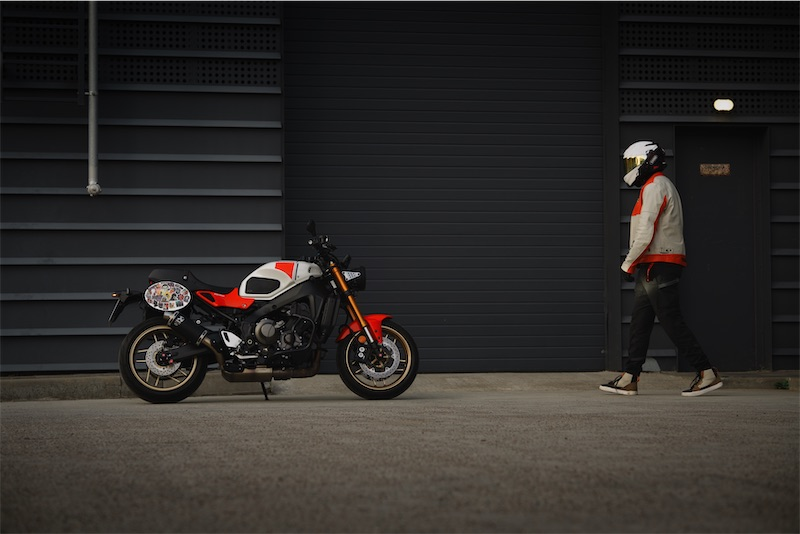

2022
Що змінилося у 2022
- Об'єм зріс з 847 до 889 см³ за рахунок довшого ходу поршня
- Ковані поршні та нові розподільчі вали
- Новий впуск і вихлопна система
- Довші передачі для спокійнішої їзди на трасі
- Відповідність нормам Euro 5
Двигун CP3 · Crossplane Concept
Серце XSR900 — трициліндровий двигун CP3 (Crossplane Concept). Інтервал запалювання 240° дає рівну, «лінійну» тягу на низах і характерний звук, а на високих обертах двигун охоче крутиться до відсічки.
Інтервал запалювання
Чотиритактний цикл займає два оберти колінвала — 720°. Три циліндри ділять їх порівну: кожні 240° спрацьовує наступний циліндр у порядку 1-2-3.
Еволюція
Друге покоління отримало довший хід поршня при тому самому діаметрі циліндра.
Специфікації
| Тип | Рядний 3-циліндровий, 4-тактний |
|---|---|
| Охолодження | Рідинне |
| Газорозподіл | DOHC, 12 клапанів |
| Робочий об'єм | 889 см³ |
| Діаметр × хід поршня | 78,0 × 62,0 мм |
| Ступінь стиснення | 11,5 : 1 |
| Максимальна потужність | 119 к.с. (87,5 кВт) при 10 000 об/хв |
| Максимальний крутний момент | 93 Н·м при 7 000 об/хв |
| Живлення | Електронне впорскування, ride-by-wire (YCC-T) |
| Коробка передач | 6-ступенева, квікшифтер |
| Зчеплення | Мокре, багатодискове, з функцією A&S (антиблокування) |
Особливості
Трійка поєднує тягу двоциліндрового двигуна на низьких обертах із плавністю та «верхами» четвірки. Крутний момент на 6–7 тис. об/хв робить мотоцикл жвавим у місті, а режими їзди дозволяють приборкати відгук ручки газу на мокрій дорозі.

XSR900 · Legend RedLegend Blue
Історія моделі, дизайн у стилі 80-х, лівреї та електроніка — на головній сторінці.
← На головну